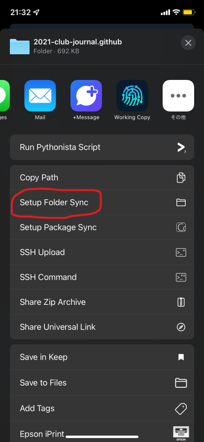
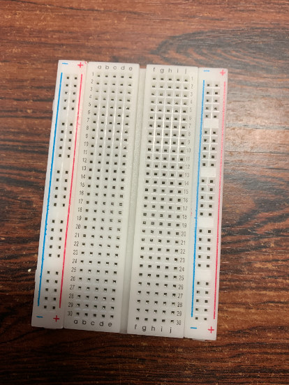
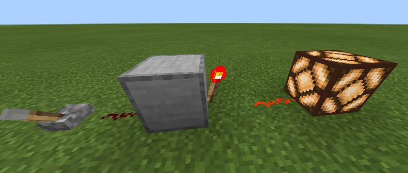
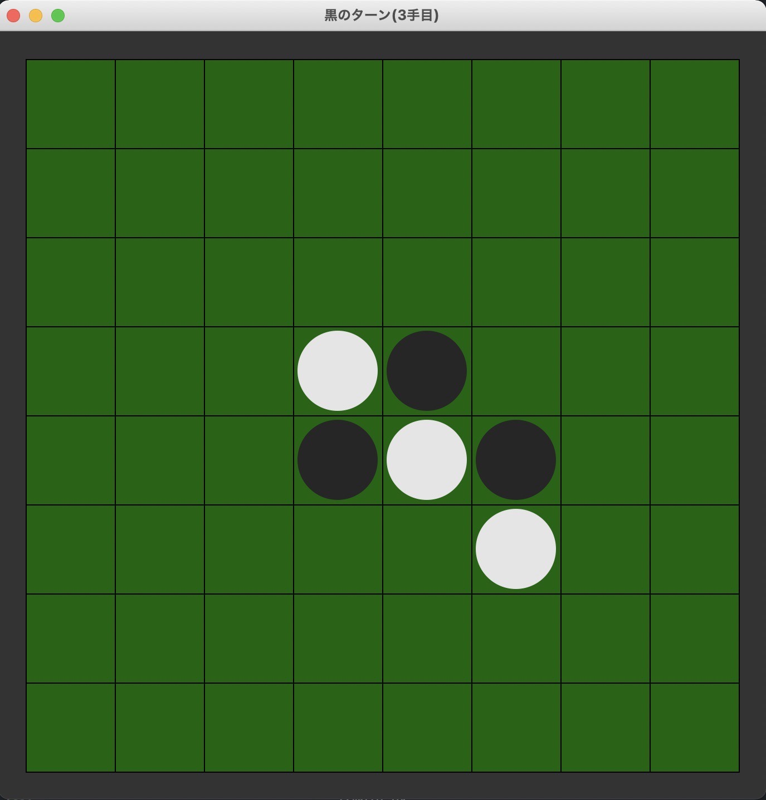
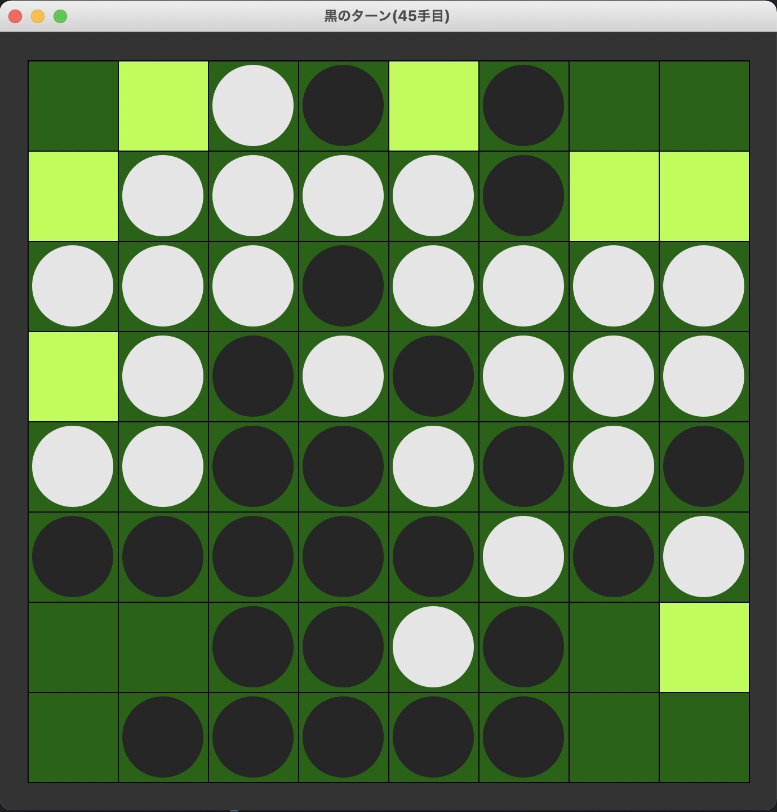
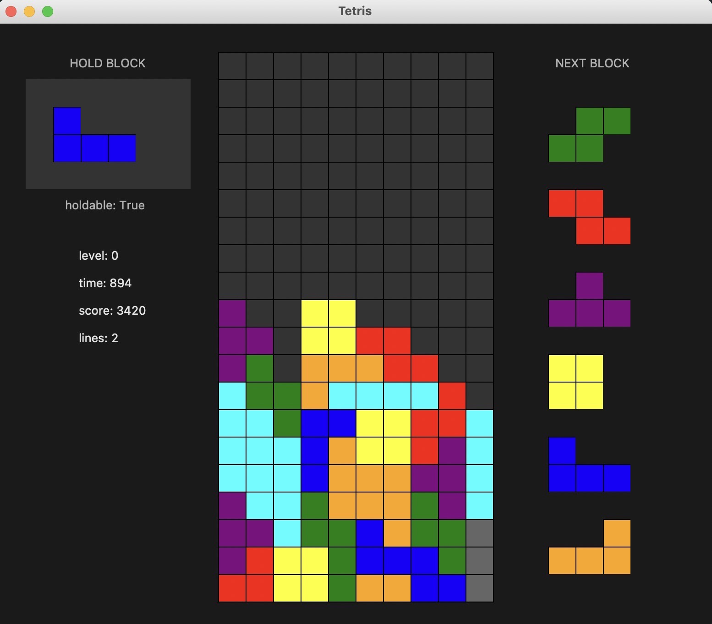

ここについて
このリポジトリは電算部のリポジトリです
セットアップ方法
- Rustからインストーラーをダウンロードします。
- インストーラーを実行すると、標準ではパスが通ります。
- コマンドプロンプトからmdbookをインストールします。
cargo install mdbook
- リポジトリのルートディレクトリで、mdbookを起動します。
mdbook serve
- 標準だと、
http://localhost:3000
で立ち上がります。
使用したものについて
- mdBookはrustで作られた文章管理ツールです。
- peaceiris様が作られた、actions-mdbookを使用しています。
書き方
Rustは実行できます。
fn main() { println!("Hello, 電算部!"); }
MathJaxの数式も書けます。 \[\int \int f(x,y) dx dy \]
免責事項
当ブログからのリンクなどで移動したサイトで提供される情報、サービス等について一切の責任を負いません。
また当ブログのコンテンツ・情報について、できる限り正確な情報を提供するように努めておりますが、正確性や安全性、合法性を保証するものではありません。情報が古くなっていたり誤情報が含まれている可能性があります。
当サイトに掲載された内容によって生じた損害等の一切の責任を負いかねますのでご了承ください。
著作権
当ブログは著作権や肖像権の侵害を目的としたものではありません。著作権や肖像権に関して問題がございましたら、ご連絡ください。迅速に対応いたします。
第二十二回工華祭 リンク
執筆者
第23回工華祭へのリンク集
- 群馬工業高等専門学校公式サイト
- 第23回工華祭公式サイト
- Twitter:第23回工華祭実行委員会
- Instagram:nitgc_kokasai
- Github:工華祭実行委員会
- Github:2021-club-journal.github.io
はじめに
多くの方は、マークダウンを書くときにはパソコンを使うかと思います。しかし、実はパソコンがなくてもマークダウンはかけるのです！
そこで今回はスマホでマークダウンを書く方法についてご紹介します。
このガイドは、rsteeleさんの[Mobile] Setting up iOS git-based syncing with mobile app (using Working Copy)を参考にして書きました。
前提条件
working copyを自由に使うためには、Proアカウントが必要です。(無課金でも使える機能はあります)。もし、あなたが学生ならば、working copy様が、学生向けにプランを出してくださっています。 なお、この記事はios向けです。
アプリをインストール
さて、さっそくアプリをインストールしましょう。 必要になるのは、
の2つのアプリが必要です。
Working Copyのセットアップ
- Working Copy for studentsにアクセスして、tap hereのリンクを押します。

- アプリが自動で開かれるので、Githubのアカウントでサインインしてください。

- サインインしたら、クローンします。右上の + ボタンをタップして、Clone repositoryをタップします。

- すると、クローンするリポジトリが表示されるので、ここでは例として、電算部のリポジトリを指定しています。入力したら、
https://github.com/nitgc-densan-club/2021-club-journal.github.io.git
Cloneしてください。
- クローンしてきたら、ブランチを切ります。
権限がない場合ブランチを切らないとRejectされますので注意です! リポジトリ名->Repository->Branchの順でタップしてください。

- タップしたら、ブランチ一覧が表示されます。そこの右上のブランチアイコンをタップしてください。
- ブランチの名前を付けることができます。ルールに従ってブランチ名をつけてください。

- これでブランチが新規作成されました!

OBSIDIANのセットアップ
- Obsidianを開き、Create new vaultをタップしてください。
- すると、名前を聞かれるので、お好きな名前を付けてみてください。ここではkokasai_2021にしました。
- すると、作業環境が開かれるので、右上のハンバーガーボタン->設定アイコン->Aboutの順にタップして、Languageに日本語を設定して、Relaunchを、Override config folderには
.obsidian.mobile
と入力して、Relaunchしてください。

Working CopyとObsidianの共有
ここでは、Working CopyとObsidianの共有方法について説明します。
- Working Copyのセットアップの5節まで進めたら、右上の共有ボタンをタップしてください。

- 共有画面が出たら、Setup Folder Syncをタップしてください。
 - Obsidianに先ほど用意したディレクトリを選択してください。

- Obsidianを開くとフォルダが開きました!
おわりに
以上で編集できるようになりました。 Obsidianは非常に便利な編集アプリですので是非使ってみてください。
はじめに
あなたはラズパイを買って何をしますか?
そうですLチカです!!
今回はそのLチカについて解説します。
方法
接続方法
使用したもの
今回使用したものです。
使用したものの写真
では再び、必要なものを確認しましょう。 まずは抵抗です。330Ωのものを用意しましょう。

次に、LEDです。
今回は赤色を使いました。LEDは色によって仕様が違うので、よく確認してください。

そして、ブレッドボードです。
今回使うものは、はんだ付けしなくてよいので、電子工作体験にはうってつけかと思います。
これからブレッドボードのアルファベットが縦に書かれている穴を列、数字が横に書かれているものを行と呼ぶことにします。

ブレッドボードの説明
ブレッドボードは、前述のとおり、電子工作にはよく使われます。ブレッドボードには様々な種類がありますが、今回使用したものは差し込み式と呼ばれるものです。その名の通り、ジャンパワイヤをさしたり、LEDや抵抗を直接挿せます。
ブレッドボードは行で回路が導通して、列では導通していません。
ブレッドボードへ接続
さて、ブレッドボードへ接続しましょう!
今回作成する回路は、抵抗とLEDを接続した回路を作ります。
その前に、回路に電流が流れる流れを説明します。
回路は、プラス極からマイナス極へと電流が流れます。今回はそのことに留意して作ります。
なぜならば、今回の回路は極性を間違えると、LEDが壊れるからです...
それでは接続しましょう!
写真のように接続してください。

ここで、再び注意です。LEDには極性があります。足の長いほうがプラスなので、抵抗側にあるかどうかを確認してください。
接続出来たら、ジャンパワイヤでラズベリーパイと、LEDを接続します。
ジャンパワイヤのプラス極を抵抗の行に、ジャンパワイヤのマイナス極をLED側にそれぞれ接続してください。
上から見るとこんな感じです。

するとラズパイを電源を入れていて、正しく接続されていると、LEDが点灯するかと思います。ここで光らなかったら、もう一度やり直してください。
ジャンパワイヤや抵抗、LEDは奥まで挿す必要があります。
正しく挿すとこんな感じですが、

正しく挿さってないと、こんな感じです。
以上の手順でLEDがとりあえず光ります!!
プログラミングLピカ!
今回のガイドでは、C言語とPythonを用いた実行方法をご紹介します。
Python
ターミナル上で、
nano main.py
と入力すると、nanoが立ち上がります。
nanoの使い方は下のほうに出てきますが簡単に説明します。
nanoは初心者向けのCUIエディタ言われて、vimより簡単だといわれています。
一番のメリットは下のほうにキーボードのショートカットが表示されていることです。
とは言いつつも、やはり難しいものです。簡単に下のほうに出てるものの紹介です。
^キーは、Ctrlキーを意味しています。例えば^Cと書いてあるものを実行したかったら、Ctrlキーを押しながらCキーを押すという意味です。
ということでソースコードを入力しましょう!
# GPIOを扱うためモジュールをインポートする
import RPi.GPIO as GPIO
# 時間を扱うためモジュールをインポートする
import time
# GPIOに対応するピン番号
PNO = 3
# ピン番号の指定
# BOARDとすることで、ラズパイ間で共通にコードが使える
GPIO.setmode(GPIO.BOARD)
# GPIOのピン番号(ここでは3番ピン)を出力に設定する
GPIO.setup(PNO, GPIO.OUT)
# print⽂は、標準出力(ターミナルの画面上)に文字を表示する命令
# 何回LEDを点灯するか質問している
print("How many times?")
# 変数へキーボードから入力された値を代入している
# 変数は、値を保存する箱のようなもの
loopn = input()
# どれぐらいの間隔でLEDのオンとオフをするか聞いている
print("How long sleep?")
stop = input()
# 0~⼊⼒された数未満まで繰り返す
# iはカウンタ用の変数で、loopn回だけ繰り返す
for i in range(loopn):
# HighでLEDを光らせる
GPIO.output(PNO, GPIO.HIGH)
# その状態を保持する
time.sleep(stop)
# LowでLEDを消す
GPIO.output(PNO, GPIO.LOW)
time.sleep(stop)
# これは、GPIOをほかのプログラムからでも使えるようにするための終了処理
# これがないとLEDがオフのままになる
GPIO.cleanup()
上記のソースを実行するにはターミナル上で、
python main.py
と入力すると、指定した回数、間隔で動作します!
C言語
ターミナル上で、
nano main.c
と入力すると、nanoが立ち上がるので、下記に示したソースコードを入力してください。
#include <wiringPi.h> //GPIOを扱うためのライブラリ
#include <stdio.h> //printf関数を使うためのライブラリ
#define LED_PORT 8 //GPIOに対応するポート番号
#define LED_ON 1 //LEDがオン
#define LED_OFF 0 //LEDがオフ
//プログラムはmain関数から始まります
int main() {
//loopnはループの終了条件、stopはLEDの点滅間隔
int loopn, stop;
//配線の初期化
wiringPiSetup();
// ピン番号の指定
pinMode(LED_PORT, OUTPUT);
//printf文は標準出力へ出力する
//ループの回数を聞いている
printf("How many times?");
//scanfは変数にキーボードから入力した値を代入する関数
//ループの回数を入力して代入している
scanf("%d", &loopn);
//どれくらいの間隔か聞いている
printf("How long sleep?");
scanf("%d", & stop);
//iはループ用の変数
//loopnを満たさない回数つまり0<loopn回繰り返す
//i++でループのたびにカウンタを増やしている
for (int i = 0; i < loopn; i++) {
//LEDを光らせる
digitalWrite(LED_PORT, LED_ON);
//delay関数で間隔を指定する
delay(stop);
//0でLEDを消す
digitalWrite(LED_PORT, LED_OFF);
delay(stop);
}
return 0;
}
そして、入力して実行する際にはターミナル上で、以下のコマンドを入力してください。
make
makeはMakefileに書かれた内容を実行するという意味です。
gcc main.c -lwiringPi
./a.out
おわりに
ラズパイと言ったらLチカですよね。一度Lチカをするといろいろなことに手を出したくなりますよね
電子情報工学科では、このような電子工作をしています。
興味がわいたらJ科のシラバスを見るといいです。
GitHub Profile の勧め
目次
- 自己紹介
- はじめに
- 完成イメージ
- 使用したサービス・技術
- 訪問者カウンター
- Twitterバッチ
- プログラミング言語１
- プログラミング言語２
- 競技プログラミングのレート
- 統計情報１
- 統計情報２
- その他参考にしたもの
- 感想
自己紹介
競技プログラミングが好きでやってます。 最近はだらだら気の向くままに開発してることがおおいです。
Twitter: https://twitter.com/namacha_411
GitHub: https://github.com/Namacha411
はじめに
ほかのGitHubユーザのキラキラしたプロフィールを見て、 自分でもやってみたのでその時に調べたものをまとめます。 作ってみて楽しかったので皆さんも自分好みのプロフィールを作ってみてはどうでしょうか。
完成イメージ
自分はこんな感じのプロフィールを作ってみました。
(偶然スクショのタイミングでカウンターが314になって嬉しいです)

使用したサービス・技術
完成イメージにあるものを上から順番に紹介していきます。 また、使おうかどうか迷ったものもまとめて書いていくのでぜひ自分で作る際に参考にしてみてください。
以下、画像は少なめにする予定です。 タイトル欄にリポジトリへのリンクを埋め込んでおいたので興味があるものは直接見てみてください。
また、markdownの書き方、git、GitHubの使い方などは省略させていただきます。
訪問者カウンター
画像、名前の通り萌えカウンター(Moe-counter)というものを使いました。 訪問者数をカウントしてくれます。
かわいいのでお気に入りです。 設定次第でアニメーションを動かすことができます。
罠なのですが、vscodeでマークダウンを自動保存、自動レンダリングをオンにしながら編集すると、 カウントが一瞬で爆増するので注意してください。
Twitterバッチ
Shieldsというバッチを簡単に作れるサービスがあるので、これを使いました。
細かく設定ができるので、応用が利き様々なバッチが作れます。 これを使ってより簡単にバッチが作れるサービスを作ってくれている方もがいるので、 自分で一から作るのが面倒な場合は、さがしてみるとより簡単にバッチが作れるかもしれません。
プログラミング言語1
deviconはMITライセンスで公開されており、 プログラミング言語など様々なロゴを使用することができます。
豊富なロゴが高画質であるのでかなり使いやすいと思います。
プログラミング言語2
ロゴの部分はバッチにしようか迷いました。 プログラミング言語だけでなく、SNSやOSなど様々なバッチがまとめてあります。
競技プログラミングのレート
atcoder-badgesを使いました。
ユーザーネームを入力するだけでバッチを作ってくれます。 ユーザーのレートに応じた色も付けてくれていい感じのバッチができます。
atcoderだけでなく、codefocesにも対応しているので、 両方で競技プログラミングをしている方には特におすすめです。
統計情報1
GitHub Readme Statsを使いました。
このリポジトリでは、日本語のドキュメントがあり、 具体的な使用例が豊富に書いてあったためとても設定しやすかったです。
シンプルでわかりやすいデザインであるところや、 表示時にちょっとしたアニメーションがあるところが気に入っています。
統計情報2
統計情報はこっちを使用するか迷いました。
どちらかというとかっこいい感じで統計情報を表示してくれるものが多そうです。 36種類ものプラグイン、テンプレートがり、オプションは数百もあるらしいです。
これを使うとより凝ったものが作れそうな感じはあります。
その他参考にしたもの
awsome-github-profile
これめちゃくちゃ使いました。 いろんな人のプロフィールが載ってます。 GIFで掲載されていてアニメーションが動くので見やすく、 簡単に好みのプロフィールを探すことができます。
感想
あまりセンスのよくない自分ですが、個人的になかなかいいものができたのではないかと思っています。 ここに紹介されていないものでおすすめのプロフィールの書き方等あったらぜひ教えてほしいです。
Twitter、GitHubやってるのでフォローなどしてくれると嬉しいです。 良ければ絡んで下さい。
その他、ご意見・ご指摘・誤字脱字などもTwitterまたはGitHubまでお願いします。
はじめに
Minecraftというゲームを御存じですか？ 説明する必要がないまでに有名なゲームです。 冒険したり、建築したり、PvPしたりなど遊び方が無数にあるゲームですが、本記事ではそのうちレッドストーンと呼ばれる部分を解説します。
レッドストーンを使うと、Minecraftの様々な作業を自動化することができます。 自動ドアや作物の自動収穫などゲーム進行のために実用的なものから、計算機などロマンを追求したものまで、かなりのものがレッドストーンで実現可能です。 そんなレッドストーン、思うままに操っていろんなものが作れたら楽しいと思いませんか？
本記事の目的
レッドストーン回路を作って遊ぶというのは、Minecraftの中でもかなりニッチな遊び方で、難しい印象を持っている方も多いと思います。 それもそのはず、Minecraftのレッドストーンは、論理回路や論理代数といった、 現実のコンピュータを動かすための体系を模して作られているのです。 よって、より複雑なギミックを作ろうと思ったら、必須ではないにせよ、論理回路の知識が重要になってきます。
逆に言えば、レッドストーンに詳しくなるということは、現実のコンピューターにも詳しくなるということです。
レッドストーンを学ぶことで、現実のコンピュータについて理解を深めることができます。
本記事は、Minecraftを通して論理回路を学ぶというコンセプトで、
Minecraftのゲーム画面を使いながら論理回路を説明する試みです。
論理回路を説明するなどえらそうなことを抜かしていますが、かくいう私は、高専で論理回路を1年と少し学んだ学生です。論理回路の説明にあたって、不正確な表現が含まれる可能性があるかもしれません。
ご理解よろしくお願いします。
レッドストーン回路の構成要素
まずは下の画像をご覧ください。

上図は、基本的なレッドストーン回路の例となっています。 現状ではこの回路がどのように動作するか理解する必要はありません。 この回路の観察を通して、レッドストーン回路の基本的な構成について説明します。
画像を見ると、回路には二つのレバーがつながっていることがわかります。 そして回路にレッドストーンランプがつながり、点灯しています。 その間にはレッドストーンとレッドストーントーチが組み合わせて設置してあります。 画像ではレバーのうち一方はオンとなり信号を出力しています。 もう一方はオフであり信号を出力していません。 レバーのオンオフの組み合わせを変えると、レッドストーンランプがついたり消えたりします。 この組み合わせを表にまとめると、次のようになります。
| \(X\) | \(Y\) | \(f\) |
|---|---|---|
| 0 | 0 | 1 |
| 0 | 1 | 1 |
| 1 | 0 | 1 |
| 1 | 1 | 0 |
ここで、レッドストーンの信号がオンであることを\(1\)、オフであることを\(0\)とあらわすことにします。 さらに、入力となる二つのレバーにはそれぞれ\(X\)、\(Y\)と名前を付け、 出力であるレッドストーンランプには\(f\)と名前を付けています。 表より、画像の回路はレバーがどちらもオンの時(\(X = 1, Y = 1\)の時)にのみレッドストーンランプを消灯(\(f = 0\))させ、 それ以外の時にはレッドストーンランプを点灯(\(f = 1\))させることがわかります。
このように、信号のオン/オフの状態を数字の1/0に対応させることを正論理といいます。 また、1/0の状態をとる\(X, Y, f\)などの変数を、論理変数といい、 入力と出力を対応させた上記の表を真理値表といいます。
真理値表は、レッドストーン回路の内部構造には注目せず、入力と出力の関係のみに着目します。 真理値表からレッドストーン回路を分析すると、レッドストーン回路は、特定の入力に対して特定の出力を返す関数のようなものだと考えることができます。 このように、ある論理変数を受け取り、その値に応じて1/0の値が決まる関数を、論理関数といいます。 ここまで理解すると、レッドストーン回路の設計は、論理関数を構成することと等価だと考えることができます。 どんな真理値表や論理関数が与えられても、それに対応するレッドストーン回路を設計できればよいということです。 本記事はその方法を解説するところが最終目標です。
論理演算
任意の論理関数に対応するレッドストーン回路は、次の三つの基本的な論理関数の組み合わせで作ることができます。
NOT回路
1つの入力を持つ論理関数です。 真理値表は以下のようになります。
| \(X\) | \(f\) |
|---|---|
| 0 | 1 |
| 1 | 0 |
0は1に、1は0に反転する論理関数です。 この論理関数は、次式のように表すことにします。
\(f = \overline{X}\)
これをMinecraftで再現すると次のようになります。

OR回路
2つの入力を持つ論理関数です。 真理値表は次のようになります。
| \(X\) | \(Y\) | \(f\) |
|---|---|---|
| 0 | 0 | 0 |
| 0 | 1 | 1 |
| 1 | 0 | 1 |
| 1 | 1 | 1 |
2つある入力のうち、少なくともどちらかが1なら、出力が1となる論理関数です。 この論理関数は、次式のようにあらわすことにします。
\(f = X + Y\)
ここで用いている+の記号は、いわゆる普通の足し算(+)とは異なり、あくまでORの論理関数を表現するために置いた記号だと考えてください。 この論理関数をMinecraftで再現すると次のようになります。

3つ以上の入力を持つOR回路についても同様に定義されます。 次式は4入力のOR回路を表していて、\(A, B, C, D\)のうち少なくとも一つが1なら\(f = 1\)となります。 2入力のORゲートを繰り返し用いることで、簡単に再現することができます。
\(f = A + B + C + D\)
AND回路
2つの入力を持つ論理関数です。 真理値表は次の通りです。 この論理関数は、次式のように表すことにします。
\(f = XY\)
| \(X\) | \(Y\) | \(f\) |
|---|---|---|
| 0 | 0 | 0 |
| 0 | 1 | 0 |
| 1 | 0 | 0 |
| 1 | 1 | 1 |
二つの入力が同時に1となったときにのみ1を出力する論理関数です。 Minecraftでの再現例は以下です。

3つ以上の入力を持つAND回路についても同様に定義されます。 次式は4入力のAND回路を表していて、\(A, B, C, D\)がすべて1であるときのみ\(f = 1\)となります。 2入力のANDゲートを繰り返し用いることで、簡単に再現することができます。
\(f = ABCD\)
論理関数の構成
NOT, OR, ANDの組み合わせですべての論理関数を表現することができます。 なぜそのようなことができるのかを確認する前に、 NOTとANDを組み合わせて、次のような論理関数を考えてみます。
\(f = \overline{A}BC\)
この関数の真理値表は以下のようになります。
| \(A\) | \(B\) | \(C\) | \(f\) |
|---|---|---|---|
| 0 | 0 | 0 | 0 |
| 0 | 0 | 1 | 0 |
| 0 | 1 | 0 | 0 |
| 0 | 1 | 1 | 1 |
| 1 | 0 | 0 | 0 |
| 1 | 0 | 1 | 0 |
| 1 | 1 | 0 | 0 |
| 1 | 1 | 1 | 0 |
\(A = 0, B = 1, C = 1\)の時にのみ\(f = 1\)となることがわかります。 このように、変数の一部をNOT回路に通してからすべての変数をAND回路に通す論理関数を考えると、 真理値表の出力は、どこかの行のみが1になり、それ以外は0となることがわかります。 どこの行が1になるかも自分で設定することができます。 例えば一行目のみが1となるような論理関数は次式です。
\(f = \overline{A}\overline{B}\overline{C}\)
以上を踏まえて、次のような真理値表を表す論理関数を導出しましょう。
| \(A\) | \(B\) | \(C\) | \(f\) |
|---|---|---|---|
| 0 | 0 | 0 | 1 |
| 0 | 0 | 1 | 0 |
| 0 | 1 | 0 | 0 |
| 0 | 1 | 1 | 1 |
| 1 | 0 | 0 | 0 |
| 1 | 0 | 1 | 0 |
| 1 | 1 | 0 | 0 |
| 1 | 1 | 1 | 0 |
真理値表を見ると1行目と4行目のみが1が出力され、それ以外は0が出力されます。 先の議論から、1行目のみを1とし、それ以外を0とするような論理関数は次のように表されます。 これを\(f_{1}\)としています。
\(f_{1} = \overline{A}\overline{B}\overline{C}\)
同様に、4行目のみを1とし、それ以外を0とするような論理関数は次式です。 これを\(f_{2}\)としています。
\(f_{2} = \overline{A}BC\)
この時、真理値表の論理関数を\(f\)とおくと、
\(f = f_{1} + f_{2} = \overline{A}BC + \overline{A}\overline{B}\overline{C}\)
のように表すことができます。
このように、論理関数を論理変数のANDとそのORであらわすことを、「論理関数を積和形に展開する」いいます。
終わりに
今回紹介した回路は、入力の値によって出力が完全に決まる、組み合わせ回路と呼ばれる種類のもののみです。 入力の値だけでなく、前の回路の状態によって出力が変化する順序回路もありますし、組み合わせ回路についても、より小規模に回路を実現するための方法など、本記事では紹介しきれなかったものがまだまだあります。 よければいろいろ調べてみてください。
まえがき
3Jのともはです。 みなさんは、プログラミングに興味ありますか？プログラミングは、あなたの発想次第でどんなものでも作ることが出来る、無限大の可能性を秘めています。何か作ってみたい！とは言っても、色々な言語があって分からないですよね。そこで今回、pythonという言語で作ったゲームをいくつか紹介したいと思います。
pythonってどんな言語？
みなさんは、C言語に触れたことがありますか？C言語って、pythonを含むさまざまな言語の生みの親みたいな言語なんです。触れると分かるんですが、めっちゃ難しいんです。3Jの授業中にエラーをたくさん吐かれたときは泣きたくなりました、、
それに比べてpythonは、簡単でとても書きやすく、現在最も人気のある言語の一つなので、環境構築の方法も調べればすぐに出て来ます。人工知能って聞いたことありますか？あれも実はpythonで書かれているんですよ！
ゲーム紹介
さて、pythonで作った簡単なゲームを二つほど紹介します。
オセロ

こちらをご覧ください。デザインが本格的ですよね。なんとpythonでオセロが作れちゃうんです！作ったコンピュータと対戦してみます。黒い方が私です。

白が頭のいい置き方をしていますね。右の間に黒が置いた瞬間、完全に返されてしまいます。このコンピュータ、適当に置いている訳ではなく、実はちゃんと考えているんです。考えている、というと意志があるように思えますが、5手先の盤面までを「探索」する事で最適解を出しているだけなのです。「探索」は無数のアルゴリズムがあるので、興味のある方は是非、調べてみてください。

ちょっと不利になってきたので、置ける場所を可視化しました。こうして見ると、どこに置いても負けそうですよね。負けを確信したその時、、

なんと私が勝ってしまいました！角を３つも取らせてくれました。強さに影響するパラメータの調整に失敗したようです。今回は紹介できませんが、このコンピュータをディープラーニングと呼ばれる手法の人工知能で作れば、とても強いものになると思います。これは、強さの基準を人間が定めずとも、学習してどんどん強くなっていくので驚きです。興味のある方は是非、機械学習についての本を読んでみてください。
テトリス

こちらもご覧ください。とってもカラフルですよね。なんとpythonでテトリスが作れちゃうんです！ここでは、簡単に紹介します。

長いミノが綺麗にハマりそうですね。これはとても気持ちが良いです。ラインを揃えると消え、スコアも加算されます。

やる気をなくしたようです。ゲームが終了してしまいました。スコアも表示されましたが、高いのかよく分かりません。テトリスはミノの回転処理がとても難しかったです。回転がうまくいき、綺麗にラインが消えたときはとても感動しました。簡単に遊べるゲームでも、作るのは非常に大変なのです。やる気のある方は是非、もっと難しいゲームを作ってみてはいかがでしょうか。
さいごに
ここまで、pythonのゲームについて紹介しましたが、これらはtkinterと呼ばれるライブラリで作ったものです。pythonはゲーム制作に適した言語とは言えませんが、簡単にプログラミング言語を学ぶ上で、ゲームを作るのも面白いかもしれません。プログラミングでは、初めからクオリティの高いものを作ることは非常に困難です。ですが、基礎的な知識をコツコツと積み重ねていけば、いつの間にか素晴らしいアプリを開発するほどに成長します。プログラミングは可能性が無限大です。あなたのアイデアが、世界を変えるかもしれません！ここまで読んで頂き、ありがとうございました。
IT勉強会 第6回目
日付:2021年5月11日(火)16時20分